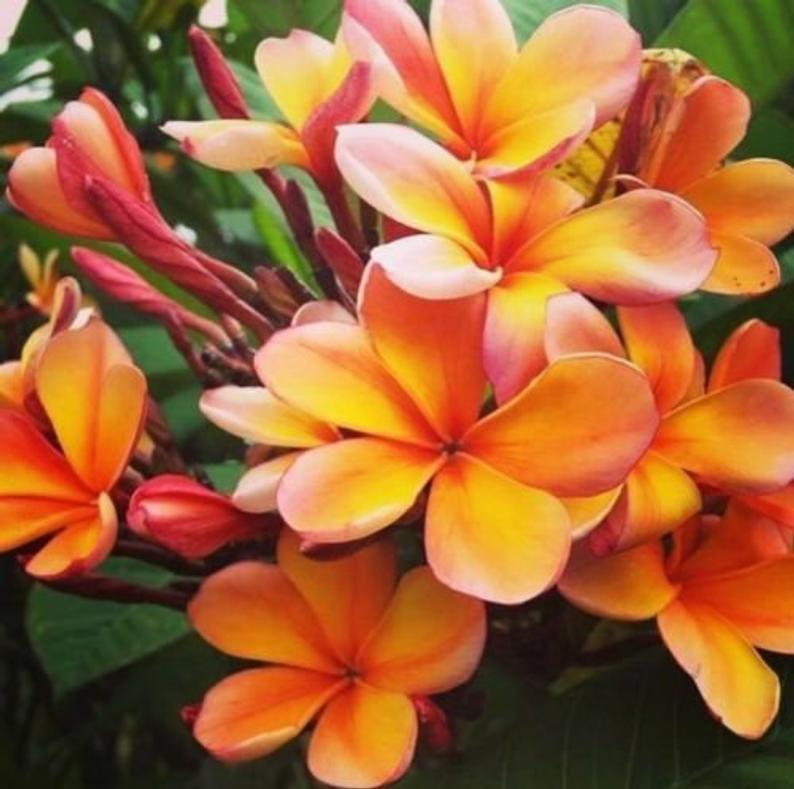
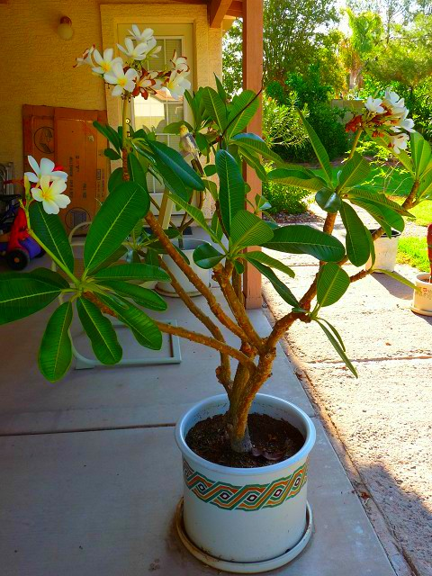

Plumerias!
 The hardy Plumeria! A tropical plant that thrives in warm weather & can survive in dormancy for extended periods. These periods can include over a year forgotten in a basement corner with no light & water!
The hardy Plumeria! A tropical plant that thrives in warm weather & can survive in dormancy for extended periods. These periods can include over a year forgotten in a basement corner with no light & water!

The hardy Aloevera! A well known succulent found at every home improvement center! It can survive drought, low light, neglectful humans & nuclear winters! Also handy for the clumsy chef who forgets that pans get hot!
The hardy Crown of Thorns! Another succulent that can tolerate neglectful humans! This one uses pointed jabber things to keep humans from over handling it while dazzling them with its purdy blooms!